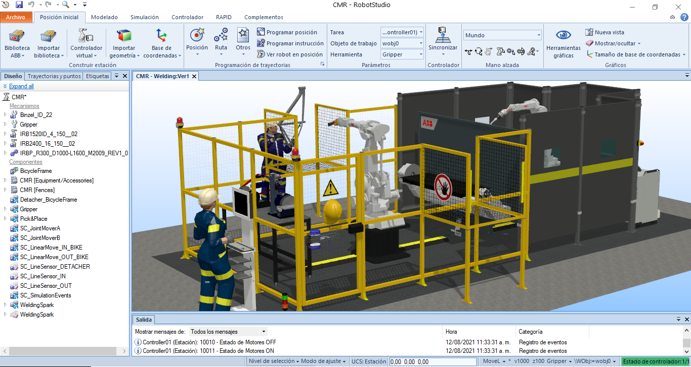
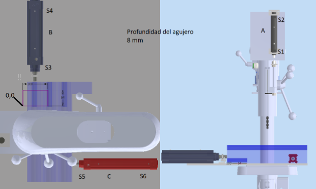

TecnoBikes
Somos una empresa enfocada a la fabricación de bicicletas estilo MTB (Mountain Bike) y Fixie (piñon fijo), caracterizada por la automatización e implementación de tecnología de punta en nuestras líneas de fabricación, que permiten tener una alta eficiencia y gran calidad en los productos finales.
Automatización
Implementación de estrategias de pre- y post-automatización para optimizar las líneas de producción.
Monitoreo en la nube
Monitoreo y control en tiempo real por medio de SCADA alojados en la nube, que permiten ver en detalle la operación.
Celdas de Manufactura
Robots relevan a operarios de tareas de alto riesgo, mejorando la salud de los operarios y haciendo con precisión los procesos.
Comisionamiento virtual
Digital Twin provee herramientas para mejorar la planeación de la planta y su producción.
Contenido de Producto
El contenido de producto se encuentra dividido en las siguientes categorías:
Gestión de Producción y Automatización
Para el presente proyecto, se propuso la construcción de una línea de manufactura para bicicletas tipo Fixie y MTB. Para lo cual, se realiza el ejercicio académico de tomar y consultar tiempos de ciclo, alistamiento, entre otros parámetros con el fin de realizar una línea de producción hipotética de bicicleta. Con estos valores, se realizan dos simulaciones en el software Tecnomatix Plant Simulation (TPS). En este se aplica el primer pilar de la pre-automatización que es la distribución de la planta o layout actual. Para el presente caso se identifican 5 lineas de producción. Ensamble de bicicleta, Fabricación marco, fabricación horquilla, fabricación manubrio y ensamble ruedas.

Ensamble bicicletas

Fabricación de marcos de bicicleta

Fabricación horquilla de bicicleta

Manubrio
Ensamble ruedas
Diagrama en TPS. Primera iteración
Una primera iteración se realiza con el uso de objetos que simulan la planta y el flujo del material a lo largo de la línea de producción. En este se realiza una primera detección de cuellos de botella, porcentaje de espera de las estaciones, así como bloqueos de estas por generación de colas. En esta se asume material infinito, lo que nos permite identificar el tiempo teórico de producción de bicicletas por hora. Posterior a eso, mediante las librerías de TPS 16, se realiza la segunda iteración con la generación del Value Streaming Mapping (VSM), que es el flujo de generación de valor. Mediante este se identifican las etapas de generación de valor, el Manufacturing Lead Time (MLT), entre otros Key Performance Indicators.


Como se puede apreciar, se empieza a evidenvciar diferentes estaciones se encuentran estancadas, en especial alquellas aguas arriba de una de las estación que requiere mayor tiempo de ciclo. De igual forma se visualiza una generación de 1.33 bicicletas por hora y 60.32% de esperas
Posterior a eso, mediante las librerías de TPS 16, se realiza la segunda iteración con la generación del Value Streaming Mapping (VSM), que es el flujo de generación de valor. Mediante este se identifican las etapas de generación de valor, el Manufacturing Lead Time (MLT), entre otros Key Performance Indicators.
Diagrama VSM
1. Tackt Time
Como se apreciará más adelante, las estaciones de producción de la presente línea de manufactura están desbalanceadas, por lo cual, no hay un takt time unificado entre ellas, produciendo 1.33 bicicletas cada hora, según lo muestra las primeras simulaciones. Para el presente caso, se propone un takt time hipotético en base a la demanda de bicicletas del año 2008, donde, a partir de las cifras presentadas por hubo una demanda de 480.000 MTB. Con esto en mente, se hace el ejercicio académico de poder abarcar el 2% de la venta de bicicletas MTB, esto es equivalente a tener una demanda de 9600 bicicletas al año, es decir, con 260 dias disponibles, 37 bicicletas/turno y teniendo un tiempo disponible de trabajo de 7 horas, es decir 420 min/turno, obtenemos un tack time objetivo de 11.35 min.
2. Work in process WIP
Como se puede observar en el siguiente archivo en Excel, se realizó el calculo del parámetro WIP, para este, se conto con el apoyo de la simulación en TPS, el cual nos brinda el calculo del WIP de cada uno de los elementos fabricados. En este se simularon 2 días de producción con los cuales se obtuvo un valor de 2398.
3. Tiempo de ciclo Tc y tiempo de set up Tsu
En el caso del tiempo de ciclo de los diferentes procesos, se realizó el proceso académico de consultar videos y algunos documentos sobre trabajos finales el cual permitió obtener los siguientes valores para las diferentes estaciones propuestas en la línea de producción de ciclas

4. Tasa de producción Rp
En el caso de este indicador, se evidencia el desbalance de partes producidas, en especial en operaciones de facil producción como es el caso de los dobleces y cortes de tubo.

5. Capacidad de producción
En el caso de este indicador, se evidencia el desbalance de partes producidas, en especial en operaciones de facil producción como es el caso de los dobleces y cortes de tubo.

6. Manufacturing Lead Time (MLT)
El tiempo de manufactura para la presente linea de producción, es de 21 horas y 55 min con una tiempo de agregación de valor de 2 horas y 10 min
7. Balanceo de lineas
8. Diagrama de precedencias
Con el fin de conocer la organización de la linea de manufactura, se realiza un grafico de precedencia presentado acontinuacion

Planeación del Proyecto
Evaluación Económica
Haciendo el análisis económico del proyecto e efectivamente rentable, con una producción de 1.4 bicicletas por hora en diez horas laborales. La línea cuenta completamente con sistemas automatizados y sistemas híbridos de ensamble o montaje. Termina teniendo un retorno de inversión (TIR) de 3% y una cobertura completa de la inversión inicial en algo más de 18 meses.
Celda de Manufactura Robotizada
Resumen Ejecutivo
TecnoBikes es una empresa enfocada a la fabricación de bicicletas estilo MTB (Mountain Bike) y Fixie (piñon fijo), lo que caracteriza a TecnoBikes es la automatización e implementación de tecnología de punta en nuestras líneas de fabricación, que permiten tener una alta eficiencia y gran calidad en los productos finales. Entre las tecnologías se destacan: Conexión de máquinas a Internet de las cosas (IoT), Digital Twin para realizar comisionamiento virtual de la planta, Monitoreo en tiempo real por medio de SCADAs en la nube y celdas de manufactura robotizadas.
Estas tecnologías proporcionan herramientas para realizar análisis en tiempo real de la producción y el estado de la maquinaria, esto junto con la implementación de estrategias de pre- y post-automatización son la propuesta que permitiría a TecnoBikes competir con empresas locales no automatizadas y con grandes importadores, al ofrecer una opción que impulsa la economía nacional promoviendo empleo y una gran calidad.
Nuestras celdas de manufactura robotizadas se distinguen por la adopción de altos estándares de seguridad para su diseño y la innovación en su planeación para permitir realizar procesos encadenados tales como el proceso de soldado de los marcos de las bicicletas y su respectivo pulido que se realizan en una única celda que posee dos robots los cuales trabajan de manera colaborativa al integrarse estos procesos en una única celda reducimos la cantidad de operarios realizando tareas manuales y eliminamos tiempos de transporte entre una estación y otra para cada proceso. La forma en que funciona esta celda es: un operario coloca el marco pre-armado con unos puntos de soldadura en el conveyor de cadena, y una vez ingresa a la celda, el sensor lo detecta e inicia el programa, el primer robot realiza la soldadura y el segundo robot toma los marcos soldados del conveyor y realiza el pulido.
Diseño


Simulación
Digital Factory
Controladores industriales PLC
Actuadores de automatización
Formulación del Problema
En la solución de automatización planteada se cuenta con 4 máquinas que hacen uso de actuadores para ejecutar las secuencias que permiten reallizar las siguientes tareas:
Selección de tarea
Para el desarrollo del proceso de selección de actuadores en detalle se escogió el proceso de Taladrado. Para el problema propuesto los tubos vertical y diagonal deben ser provistos con dos agujeros cada uno. Los tubos están posicionados de tal forma que el talabro sigue un recorrido rectangular. Para la secuencia a desarrollar hay que tener en cuenta que la distancia entre agujeros es de 64 mm en una dirección y 100 mm en la otra dirección. La fuerza de taladrado es de 300N, los tubos suman una masa de 2,1 kg, la mesa de desplazamiento tiene una masa de 30kg.
Selección de Componentes
El proceso de selección de cilindros se puede detallar a continuación
Diagramas de circuitos
Con base al esquema neumático se definieron las entradas y salidas necesarias para el control eléctrico del sistema, y se añadieron detalles como las señales adicionales de START/STOP y parada de emergencia. Se definieron dos etapas de funcionamiento: la etapa de control y la de potencia. La etapa de control se caracteriza por ser la que incluye al PLC, y el funcionamiento a 24 voltios DC. Para el correcto montaje del PLC se antepone una fuente, la cual convierte de 110V AC a 24V DC, se escoge un SITOP de Siemens para que se mantenga coherencia con el PLC S7-1200, también de Siemens, el cual tiene un módulo incluido de entradas y salidas que sirven en DC. El PLC recibe desde los finales de carrera, los switches y pulsadores una señal de 24 V con la que alimenta al programa con las posiciones de los cilindros y posibles causalidades. Así mismo tiene una cantidad de bits definidos para excitar los relés que habilitan el sistema con A1 o detienen el proceso con A2.
Diagramas de estado
Programa de control
Simulación
Industria 4.0 en la Automatización
La arquitectura implementada para el desarrollo de este proyecto se desarrolla en 4 niveles que
siguen la
convención de la pirámide de la automatización.
Empezando desde el nivel de la planta con Sensores y Actuadores donde se usaron programas simuladores como
el
módulo Mechatronics Concept Designer de Siemens NX para las máquinas participes en el proceso, también se
tiene el uso de RobotStudio de la firma ABB para la simulación de las celdas robotizadas.
En el siguiente nivel de Control tenemos la simulación de un PLC programado en el entorno de Studio5000,
de
Rockwell Automation, con esto se lograba el control funcional de las máquinas presentes en el nivel de
Actuación.
En el piso de SCADA tenemos el uso de Ignition, producto de Inductive Automation, este actúa como
intermediario de comunicaciones entre pisos de la pirámide, fundamentalmente por medio decomunicación
OPC.
Se destaca Ignition como facilitador de implementación de comunicación a través de la Nube, logrando tener
una
HMI del proceso alojado en Internet, siendo entonces accesible desde cualquier lugar del mundo.
En el último nivel tenemos el escalón MES (Manufacturing Execution System), donde se tiene la
planificación de
la producción y ciertos criterios de decisiones de planta, esto posible con la ayudade Tecnomatix-Plant
Simulation.
SCADA
El control supervisorio en nuestro caso cuenta de dos partes un SCADA de segundo nivel (supervisión de planta) y un acceso especial para el HMI (Interfaz humano-maquina) de dos máquinas, y aunque no es usual poder acceder del nivel 2 del SCADA a los niveles 0 y 1, lo realizamos en la práctica para poder estudiar las pantallas necesarias que requieren las máquinas automatizadas.
Video Sustentación Final
Equipo de Estudiantes
Laura V. Garzón G.
Ing. Mecatrónica
Interés en las áreas de Inteligencia Artificial, Machine Learning y desarrollo web.
Elizabeth A. Lopez P.
Ing. Mecatrónica
Interés en las aplicaciones industriales de la mecatrónica, el aprendizaje de PLC y HMI enfocado a la manufactura.

John Panche
Ing. Mecatrónico
Trabajo enfocado en el diseño y construcción de la celda de manufactura robotizada, y su respectiva simulación en RobotStudio.
Ana Rodriguez
Ing. Mecatrónica
Interés en inteligencia artificial, desarrollo de software y control.
Camilo A. Zorro M.
Ing. Mecatrónico
Trabajo enfocado en la Gestión de Producción y Automatización, sensores y actuadores.
Equipo de Profesores
Prof. Ubaldo García Zaragoza
Ing.
Apoyo en los módulos de Gestión de Producción, Planeación del Proyecto y Digital Factory.
Prof. Eduardo Barrera Gualdron.
Ing. Ms.
Apoyo en los módulos de Automatización e Industria 4.0 y elementos para la evaluación económica del proyecto.
Prof. Ricardo E. Ramirez Heredia
Ing. Ms. Dr.-Ing.
Apoyo en el módulo d actuadores de Automatización.
Prof. Pedro F. Cárdenas Herrera
Ing. Ms. Dr.
Apoyo en el módulo de Celdas Robotizadas.

Prof. Victor Hugo Grisales.
Ing. Ms. Ph.D.
Apoyo en los módulos de control con PLCs y SCADA.
Prof. Carlos Julio Cortés
(Invitado)
Ing. Ms. Dr.-Ing.
Apoyo en el módulo de Gestión de Producción.
Gestión de Proyecto
Dinámica de las reuniones
Desde el día lunes 1 de Marzo, cuando se definieron los equipos de trabajo para la asignatura de APM se creó un grupo de WhatsApp para tener un medio de comunicación directa con el equipo. Por este medio se llegó a un consenso para la realización de las reuniones semanales en las que se desarrollarían las actividades relacionadas con la ejecución del proyecto integrador del curso. Por decisión unanime se llegaron a los siguientes acuerdos para las reuniones de equipo:
Interacción con los docente facilitadores
A la hora de pedir asesoría o consulta durante el curso, se utilizaron diversos medios de comunicación con los docentes. Cuando se necesitó una reunión urgente, esta se agendó con el profesor Eduardo Gualdron por medio de WhatsApp ya que esta red social nos permitía una comunicación direta y efectiva con el profesor. También nos comunicamos con los docentes Victor Hugo Grisales y Ubaldo García por medio del correo electronico institucional para resolver otras inquietudes relacionadas con conceptos de los módulos que impartieron, así como también preguntas relacionadas con el flujo de la asignatura como los cambios de fechas debido a la anormalidad académica causado por el paro nacional.
Trabajo Colaborativo
Las actividades realizadas por cada miembro del equipo se distribuyen de la siguiente manera:
Proceso de Aprendizaje
En esta sección se van a detallar los aportes y los procesos de aprendizaje de cada miembro del equipo.
Laura V. Garzón G.
- Realicé el trabajo enfocado en los módulos de planeacion del proyecto, selección de actuadores y desarrollo de interfaces HMI en SCADA.
- Apoye con actividdes de organización de documentos e información para entregas del curso.
- Profundicé temáticas relacionadas con conexión en la nube a través de iniciativas académicas como la ofrecida por IBM.
Elizabeth A. López P.
- Hice trabajo enfocado a módulos de SCADA, evaluación económica y estudio teórico del las tecnologías 4.0.
- Realicé deberes logísticos y mantenimiento de agendas de trabajo para las reuniones.
- Profundicé en los bueno hábitos de programación en Ladder y SCADA/HMI (gracias al hadbook y las clases de igual manera).
John S. Panche E.
- ...
- ...
- ...
Ana M. Rodríguez R.
- Implementé la lógica de los controladores y su respectiva verificación por simulación.
- Realicé el despliegue del SCADA Nube, su configuración y las conexiones necesarias con los nodos locales.
- Colaboré en la integración de módulos avanzados en el SCADA (informe, historico de tags) y en el desarrollo de la página.
Camilo A. Zorro M.
- ...
- ...
- ...
Nuestras Habilidades
Recomendaciones
Las recomendaciones de los miembros del equipo son:
Laura V. Garzón G.
- Para futuros cursos relacionados con el desarrollo de un proyecto en ingeniería es importante hacer un poco más de énfasis en las metodologías de trabajo que se ven actualmente en el ambiente laboral como por ejemplo Scrum.
- Desde el inicio del curso es importante aprender a usar las herramientas necesarias para el desarrollo de la actividades así como también las herramientas para los entregables de las mismas como lo es Github
- ...
Elizabeth A. López P.
- Es importante que al momento de realizar interfaces o SCADA, no importa el nivel, primero se diseñen mockups, sencillos y preferiblemente colaborativos si se va a trabajar en proyectos, debido a que con el diseño inicial se puede plantear un diseño mínimo antes de ir generando sobre la marcha, un enfoque en para este proyecto no funcionó.
- Familiarizarse con las herramientas de diseño previo a la aplicación de ellas proveerá un manejo rápido y eficiente a la hora de usarlas.
John S. Panche E.
- ...
- ...
- ...
Ana M. Rodríguez R.
- En los casos de comunicaciones OPC UA de ser posible es mejor conectarse directamente con el servidor OPC UA que viene incluido en Ignition, de esta manera se evita tener que duplicar tags en el local y en la nube.
- Plantear desde el comienzo patrones para el nombramiento de tags que permitan su parametrización, ayuda a la creación de pantallas HMI reusables y expandibles por otros modulos.
Camilo A. Zorro M.
- ...
- ...
- ...